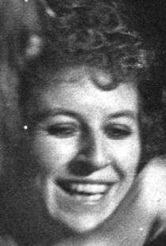

Bereavements
21st July 2019 - Bez Beswarick
We were extremely shocked and saddened to hear of one of our prime members' sudden deaths last week. Bez Beswarick was one of our original cast in Hair back in the mid seventies. She remained a firm friend and contributor to Genesis Theatre throughout all our show years and was always around in between, and after Genesis finished in the early 80s. She was active, fun loving, cheeky, always doing something and so it was a shock to find that she died on Friday 19th July very suddenly whilst in the gym. Our thoughts go out to all her many friends and family and hope that the photos and write-ups in this website will bring back some happy memories of her. Bez was 70 last week. She will be sadly missed
Chris Dumigan July 2019
